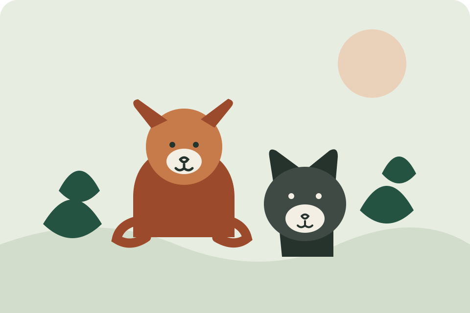
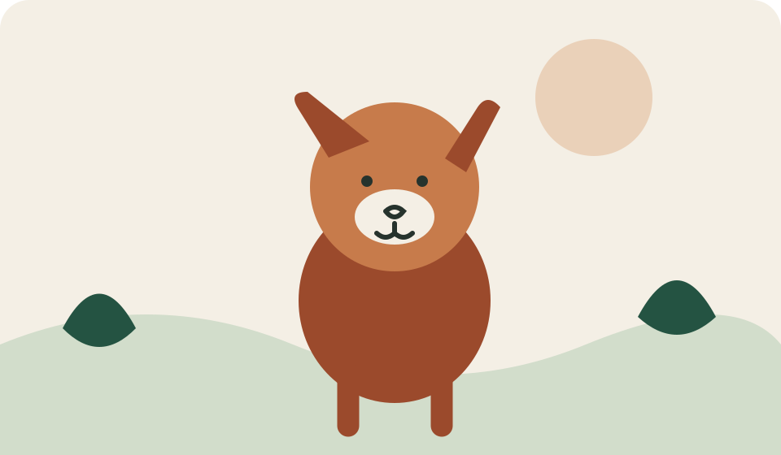

Adopt
Ask about animals looking for a home and the steps to meet them.
Explore adoptionAdoption · Fostering · Volunteering
Twin Cities Animal Rescue connects people who want to help with ways to support animals through adoption, fostering, and volunteering.
Explore ways to help
Our purpose
Learn about practical ways to support animals and connect with the rescue about current opportunities.
Ask about animals looking for a home and the steps to meet them.
Explore adoptionLearn what a temporary home may involve and ask about current needs.
Explore fosteringFind out how you can support animal care or community events.
Explore volunteering
Take the next step
Start with a question. The rescue can share current details about adoption, fostering, or volunteering.
Get in touch